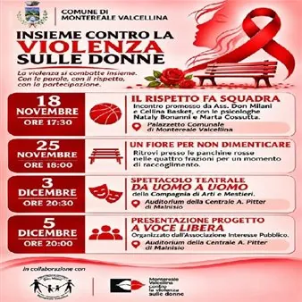

da mer 18 nov a sab 5 dic
Insieme contro la violenza sulle donne.
25 NOVEMBRE – GIORNATA INTERNAZIONALE PER L’ELIMINAZIONE DELLA VIOLENZA CONTRO LE DONNE Il Comune di Montereale Valcellina rinnova con fermezza il proprio impegno contro ogni forma di violenza sulle donne, nella consapevolezza che non basti ricordare, ma sia necessario agire…
 Indicazioni
Indicazioni
- Costi e prenotazioni
- Costo non indicato · Prenotazione non indicata
- Programma
- Programma da verificare. Apri la fonte ufficiale per orari e possibili aggiornamenti.
- In caso di maltempo
- Nessuna indicazione specifica pubblicata.
- Note
- Acquisito automaticamente dalla fonte.
L’EVENTO
Descrizione completa
25 NOVEMBRE – GIORNATA INTERNAZIONALE PER L’ELIMINAZIONE DELLA VIOLENZA CONTRO LE DONNE
Il Comune di Montereale Valcellina rinnova con fermezza il proprio impegno contro ogni forma di violenza sulle donne, nella consapevolezza che non basti ricordare, ma sia necessario agire, educare e costruire ogni giorno una cultura fondata sul rispetto.
Viviamo in un tempo in cui questa riflessione è non soltanto necessaria, ma urgente. Le continue notizie di violenza ci impongono di interrogarci sulle radici di un problema che riguarda l'intera società, sui modelli culturali che ancora lo alimentano e su ciò che ciascuno di noi può fare per contribuire a un cambiamento reale.
La violenza contro le donne non è una questione privata, ma una responsabilità collettiva. Non riguarda soltanto le vittime e le loro famiglie: riguarda tutti noi, le nostre parole, i nostri comportamenti, l'educazione che trasmettiamo alle nuove generazioni e la capacità di non rimanere indifferenti.
Come Amministrazione comunale vogliamo fare la nostra parte, coinvolgendo la comunità in un percorso di sensibilizzazione, riflessione e partecipazione che non si esaurisca nella ricorrenza del 25 novembre.
Per questo, insieme alle associazioni e alle realtà del territorio, proponiamo un calendario di iniziative rivolte a tutta la cittadinanza.
Mercoledì 18 novembre – ore 17:30
IL RISPETTO FA SQUADRA
Presso il Palazzetto Comunale di Montereale Valcellina, un incontro promosso dall'Associazione Genitori Don Milani e dal Cellina Basket, con le psicologhe Nataly Bonanni e Marta Cossutta.
Un'occasione per parlare di rispetto partendo dai più giovani, perché è proprio attraverso l'educazione, lo sport e le relazioni quotidiane che possiamo contribuire a prevenire la violenza.
Mercoledì 25 novembre – ore 18:00
UN FIORE PER NON DIMENTICARE
Ci ritroveremo contemporaneamente presso le panchine rosse delle quattro frazioni per un momento di raccoglimento e memoria.
Invitiamo tutti i cittadini a partecipare, portando un fiore o semplicemente un pensiero, per ricordare le donne che hanno perso la vita a causa della violenza e per testimoniare, insieme, il rifiuto di ogni forma di sopraffazione.
Giovedì 3 dicembre – ore 20:30
DA UOMO A UOMO
Presso l'Auditorium della Centrale A. Pitter di Malnisio, uno spettacolo teatrale che affronta, attraverso una conversazione/provocazione, il tema della violenza maschile contro le donne.
Testo e regia di Bruna Braidotti, con Francesco Cevaro e Paolo Mutti. Produzione della Compagnia di Arti e Mestieri.
Sabato 5 dicembre – ore 20:00
A VOCE LIBERA
Presso l'Auditorium della Centrale A. Pitter di Malnisio, presentazione del progetto promosso dall'Associazione Interesse Pubblico.
IL PROGRAMMA
Programma e orari
Appuntamenti raccolti dalle fonti elencate. Dove manca un orario, non è ancora disponibile in questa scheda.
Programma pubblicato
- Dal 2026-11-18 al 2026-12-05
INFORMAZIONI UTILI
Prima di partire
- Controllare la fonte prima di partire.
ORGANIZZAZIONE